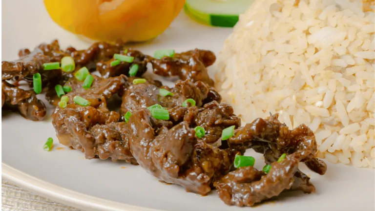

Sinigang na Hipon
Shrimp sinigang is a vibrant Filipino soup bursting with sweet, sour, and savory flavors. Fresh shrimp are the star of the show, swimming in a tangy broth traditionally made with tamarind. An array of colorful vegetables like okra, eggplant, and green beans add freshness and texture. This dish is a delightful balance of flavors and textures, perfect for any occasion, but especially satisfying on a cold day when served with steaming hot rice.

Chicken Curry Filipino Style
Filipino-style chicken curry is a warm and inviting dish that blends rich coconut milk with vibrant spices. Tender chicken pieces simmer in a creamy sauce infused with fragrant turmeric, paprika, and sometimes curry powder. The dish often incorporates colorful vegetables like potatoes, carrots, and bell peppers, adding sweetness and texture. A touch of fish sauce brings a subtle savory depth, making this dish a delightful fusion of Southeast Asian and Filipino culinary influences. Enjoy Filipino chicken curry with steaming white rice for a satisfying and comforting meal.

Beef Tapa
Beef tapa is a quintessential Filipino breakfast dish known for its savory and slightly sweet taste. Thinly sliced beef is marinated in a mixture of soy sauce, garlic, sugar, and spices, then typically pan-fried or grilled until caramelized and tender. The resulting dish boasts a beautiful reddish-brown color and bursts with umami flavor. Beef tapa is usually served with garlic fried rice and a sunny-side up egg, forming the iconic Filipino breakfast trio known as "tapsilog." It can also be enjoyed on its own or incorporated into various rice bowls and wraps.